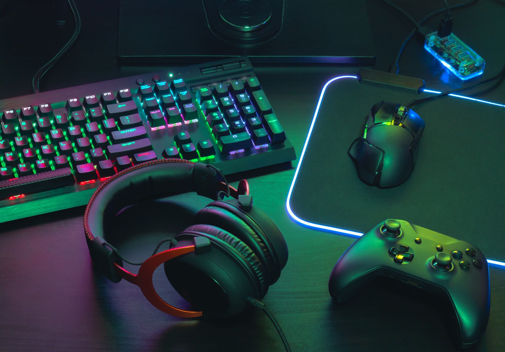
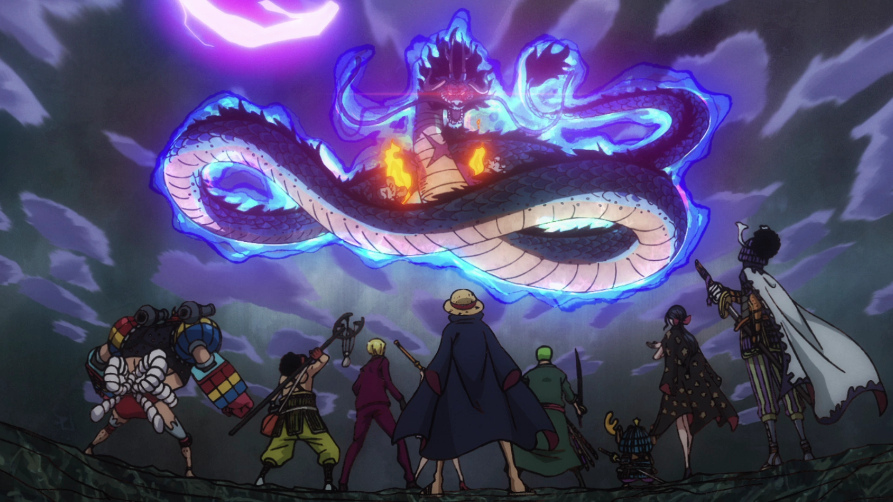

Mijn naam is Aryan Bhagwat en ik ben 16, ik volg de opleiding software development hiervoor deed ik op het vmbo economie & ondernemen met shiva. Economie & ondernemen was leuk maar niets voor mij dus zocht ik iets wat ik leuk zou vinden en met computers werken vind ik leuk. Economie & ondernemen had ik gekozen omdat ik het handig vond maar ik vond het niet leuk om te doen maar ict is nu heel handig en heel leuk.
mijn hobbys zijn gamen, tekenen en naar buiten gaan met vrienden meestal met shiva. Ik kijk ook veel series op netflix of films een paar aanraders zijn The Watcher, la casa de papel, on my block, one piece. Dat zijn een paar van mijn favorieten shows. Ik ga ook vaak samen voetballen met vrienden of basketballen.
Ik heb deze opleiding gekozen omdat ik wou leren hoe je een goedwerkende website kan maken en apps.
in mijn vrije tijd help ik graag me moeder en werk ik soms aan school en chillen met familie.
